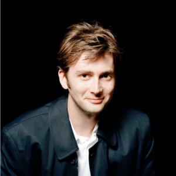

Portrayed by David Tennant
|  | (born David John McDonald; 18 April 1971) is a Scottish actor. In addition to his work in theatre, including a widely praised Hamlet, Tennant is best known for his role as the tenth incarnation of the Doctor in Doctor Who, along with the title role in the TV serial Casanova (2005) and as Barty Crouch, Jr., in the film Harry Potter and the Goblet of Fire (2005). |